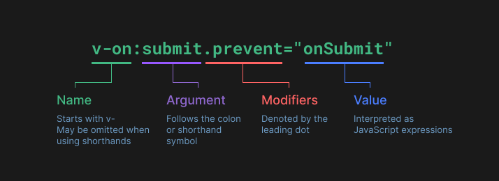
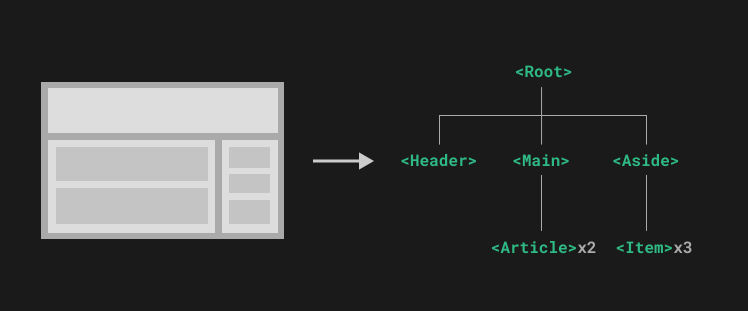

🌿 I. Creating the Vue App
- Tạo Vue App(được khởi tạo một lần, tất cả đều config ở đây).
const app = Vue.createApp({ // Heart of the Vue App
data() { // data option
return {
product: 'Socks'
}
}
})- Mount App to DOM - như ví dụ ở dưới, mount tới div tag có id là app, tất cả DOM element bao trong div đó sẽ có thể truy cập tới Vue App.
<script>
const mountedApp = app.mount('#app')
</script>- Sử dụng Mustache Syntax để call dữ liệu từ Vue App.
<h1>{{ product }}</h1>- Multiple application instances
const app1 = createApp({
/* ... */
})
app1.mount('#container-1')
const app2 = createApp({
/* ... */
})
app2.mount('#container-2')- doc: https://vuejs.org/guide/essentials/application.html
- pull https://github.com/anhnh-3008/Vue3/pull/1
🌿 II. Template syntax
- Muốn call dữ liệu cho các attribute của DOM element, sử dụng v-bind.
<img v-bind:src="image">
<!-- Shorthand: -->
<img :src="image">
<!-- Use cases: -->
<img :alt="description">
<a :href="link">
<div :class="isActive">
<span :style="isActive">- Dynamically Binding Multiple Attributes
data() {
return {
objectOfAttrs: {
id: 'container',
class: 'wrapper',
disabled: 'false'
}
}
}<div v-bind="objectOfAttrs"></div>
<!-- <div id="container" class="wrapper" disabled="false"></div> -->- Calling functions
- Có thể gọi function trong v-bind, function chỉ được một lần khi init component nên không sử dụng cho những case cần data động như changing data hoặc triggering asynchronous operations.
<span :title="toTitleDate(date)">
{{ formatDate(date) }}
</span>- Dynamic Arguments
<a :[someAttr]="value"> ... </a>- someAttr - giá trị thay đổi theo data mount từ Vue App, với những giá trị phức tạp, có thể sử dụng computed properties, xem thêm ở mục VIII.
- Modifiers
- Khái niệm hiểu như trong JQuery. Vd .prevent có nghĩa là
v-onsẽ callevent.preventDefault()trong quá trình trigger sự kiện.
<form @submit.prevent="onSubmit">...</form>
- doc: https://vuejs.org/guide/essentials/template-syntax.html
- pull https://github.com/anhnh-3008/Vue3/pull/2
🌿 III. Condition rendering
- v-show: luôn render DOM element, condition chỉ toggle
displayCSS property - v-if - v-eles-if - v-else: đúng condition thì mới render DOM, logic giống với các ngôn ngữ lập trình khác.
<p v-if="condition">Condition is true</p>
<p v-else>Condition is false</p>- So sánh v-if và v-show:
| v-if | v-show |
|---|---|
| Là chuẩn conditional rendering vì nó đảm bảo sẽ xóa và render lại toàn bộ listener events or components nằm trong block khi toggles điều kiện | Toggle điều kiện thì chỉ thay đổi duy nhất display: none thôi |
| Lazy - chỉ render DOM khi condition == true | Luôn render DOM |
| higher toggle costs - dùng với những điều kiện ít thay đổi | higher initial render costs - dùng với những element cần toggle điều kiện thường xuyên |
-
Khi v-if và v-for được sử dụng trên cùng một object, v-if sẽ được gọi đầu tiên.
🌿 IV. List rendering
- v-for: lặp một mảng.
<ul>
<li v-for="user in users">
<p>{{user.id}}</p>
<p>{{user.name}}</p>
</li>
</ul>- Nested loop:
<li v-for="item in items">
<span v-for="childItem in item.children">
{{ item.message }} {{ childItem }}
</span>
</li>- Có thể dùng of thay in.
<div v-for="item of items"></div>- Ngoài mảng, có thể lặp Object, cơ chế lặp qua các keys base theo Object.keys().
data() {
return {
myObject: {
title: 'How to do lists in Vue',
author: 'Jane Doe',
publishedAt: '2016-04-10'
}
}
}<ul>
<li v-for="value in myObject">
{{ value }}
</li>
</ul>- for with a range
<span v-for="n in 10">{{ n }}</span>🌿 V. Event handling
- v-on:event: bắt sự kiện
<!-- shorthand: @event -->
<div v-for="variant in variants" :key="variant.id" @mouseover="updateImage(variant.image)">{{ variant.color }}</div>
<button class="button" @click="addToCart">Add to Cart</button>- Inline handlers
- Với logic ngắn, đơn giản có thể truyền thẳng.
data() {
return {
count: 0
}
}<button @click="count++">Increase</button>
<p>Count is: {{ count }}</p>- Method handlers
- Logic dài + phức tạp thì có thể xử lý thông qua method
data() {
return {
count: 0
}
},
methods: {
alertCount() {
if (count > 0) {
alert('Count is positive');
} else {
alert('Count is negative');
}
}
}<button @click="alertCount">Alert</button>- Event Modifiers
- Chúng ta thường xuyên phải sử dụng event modifiers(chỉ định những common event ví dụ như không reload khi submit form, …). Có thể định nghĩa Event Modifiers trong method nhưng theo quan điểm của Vue, method chỉ để xử lý logic thôi. Nên trong Vue, chúng ta có thể chỉ định trực tiếp như sau:
<!-- the click event's propagation will be stopped -->
<a @click.stop="doThis"></a>
<!-- the submit event will no longer reload the page -->
<form @submit.prevent="onSubmit"></form>
<!-- modifiers can be chained -->
<a @click.stop.prevent="doThat"></a>
<!-- just the modifier -->
<form @submit.prevent></form>
<!-- only trigger handler if event.target is the element itself -->
<!-- i.e. not from a child element -->
<div @click.self="doThat">...</div>- Key Modifiers
- Khi xử lý event theo các keys đặc biệt, Vue cho phép chỉ định nhanh như sau:
<!-- only call `submit` when the `key` is `Enter` -->
<input @keyup.enter="submit" />- Với TH xử lý combo(vd: Ctrl + Enter), Vue cho phép thực hiện thông qua 4 keys bắt đầu :
.ctrl.alt.shift.meta
<!-- Alt + Enter -->
<input @keyup.alt.enter="clear" />
<!-- Ctrl + Click, mặc định sẽ + với click -->
<div @click.ctrl="doSomething">Do something</div>exact- xem vd
<!-- chỉ cần có ấn ctrl (có thể là ctrl + shift) method sẽ được gọi -->
<button @click.ctrl="onClick">A</button>
<!-- chỉ gọi method khi hệ thống nhận duy nhất key ctrl -->
<button @click.ctrl.exact="onCtrlClick">A</button>
<!-- chỉ gọi method khi hệ thống không có event modifiers nào -->
<button @click.exact="onClick">A</button>- doc: https://vuejs.org/guide/essentials/event-handling.html
- pull https://github.com/anhnh-3008/Vue3/pull/5
🌿 VI. Class & Style binding
🌱 Class binding
- :class: xử lý tên class
<button class="button"
:class="{ disabledButton: inventories <= 0 }"
:disable="inventories <= 0">Add to Cart</button>- Binding to Object
- Ngoài cách truyền điều kiện boolean như trên, có thể truyền object để dễ quản lý.
const classObject = reactive({
active: true,
'text-danger': false
})<div :class="classObject"></div>
<!-- render -->
<div class="active text-danger"></div>- Binding to Array
- Truyền một mảng, kết quả cũng giống bên trên.
const activeClass = ref('active')
const errorClass = ref('text-danger')<div :class="[activeClass, errorClass]"></div>Note
Trong doc có giới thiệu inline handle nhưng mình thấy không hợp lý lắm, có gì cần xử lý logic cứ nhét hết vào file Js, trong HTML để biến boolean thôi.
- With Components
- Chỉ định
:classcho component sẽ merge cho những class của child DOMs trong component(những DOM có define class)
<!-- child component template -->
<p class="foo bar">Hi!</p>
<!-- when using the component -->
<MyComponent class="baz boo" />
<!-- child rendered will be -->
<p class="foo bar baz boo">Hi</p>classcủa component được lưu trong biến$attrs, có thể chỉ định trực tiếp cho child DOM:
<!-- child component template -->
<p :class="$attrs.class">Hi!</p>
<!-- when using the component -->
<MyComponent class="baz" />
<!-- child rendered will be -->
<p class="baz">Hi</p>🌱 Style binding
- :style: xử lý style
<div
class="color-circle"
:style="{ backgroundColor: variant.color }"
></div>- Giống với Class, cũng nhận Object và Array
- Support cả camelCase và kebab-cases(để trong nháy kép)
<!-- camelCase -->
<div :style="{ color: activeColor, fontSize: fontSize + 'px' }"></div>
<!-- kebab-cases -->
<div :style="{ 'font-size': fontSize + 'px' }"></div>- doc: https://vuejs.org/guide/essentials/class-and-style.html
- pull: https://github.com/anhnh-3008/Vue3/pull/6
🌿 VII. Computed Properties
- Các thuộc tính cần dùng thêm logic để tính toán, khai báo trong computed.
const app = Vue.createApp({
data() {
return {
product: 'Socks'
}
},
computed: {
productWithBrandTilte() {
return 'Brand Vue - ' + this.product // Brand Vue - Socks
}
},
})- Tại sao không dùng function mà phải dùng computed làm gì?
| Computed property | Function |
|---|---|
| cache dựa trên reactive dependencies, như vd trên nếu product không thay đổi khi gọi lại sẽ return ngay lập tức | không cache, luôn gọi lại getter |
🌱 Best practice
- Chỉ nên tính toán, xử lý trả về giá trị, đừng có nhét cả logic thay đổi DOM hay gọi bất đồng bộ lấy dữ liêu, … Trách nhiệm duy nhất của computed chính là tính toán và trả về giá trị - S(Single Responsibility Principle) in SOLID.
- Tránh trực tiếp thay đổi giá trị computed. Chỉ nên thay đổi những variables nằm trong logic xử lý của computed property.
- doc: https://vuejs.org/guide/essentials/computed.html
- pull: https://github.com/anhnh-3008/Vue3/pull/7
🌿 VIII. Component basic
🌱 Components
- Cho phép chia UI thành những phần nhỏ độc lập, có khả năng tái sử dụng, dễ quản lý hơn.
- Không chỉ nhóm các DOM elments, Vue còn cho phép đóng gói dữ liệu, logic cho từng component.

- Defining a component:
app.component('product-detail', {
// options
template:, // define DOM elements
data() {return {} }, // define data
methods {}, // define methods
computed {}, // define computed properties
})<product-display></product-display>
<!-- Import Component -->
<script src="./components/ProductDisplay.js"></script>- Có thể sử dụng lại nhiều lần một component, mỗi khi một component được khởi tạo, toàn bộ data, computed properties sẽ được tạo mới, độc lập không liên quan gì đến nhau. Nếu muốn trigger đến một biến chung cho những components con, hãy define variable ở component cha và truyền vào component con thông qua props.
🌱 Props
- Props - Là option chỉ định những tham số nhận từ thằng cha vào component.
- Ví dụ một trang web bán hàng có nhiều sản phẩm, nếu sản phẩm được gắn premium thì sẽ free ship ngược là phí ship sẽ là 2.99$. Biến premium sẽ dùng chung cho nhiều sản phẩm cùng category nên chúng ta sẽ define premium riêng và truyền vào component sản phẩm.
const app = Vue.createApp({
data() {
return {
premium: false
}
}
})<product-display :premium="premium"></product-display>
<!-- Import Component -->
<script src="./components/ProductDisplay.js"></script>app.component('product-detail', {
// define property recieve from parent component
props: {
premium: {
type: Boolean,
required: true
}
}
template:, // define DOM elements
data() {return {} }, // define data
methods {}, // define methods
computed {
shipping() {
if (this.premium) return 'free'
return '2.99$'
}
}
})- doc: https://vuejs.org/guide/essentials/component-basics.html
- pull: https://github.com/anhnh-3008/Vue3/pull/8
🌱 Communicating events
- Trong quá trình phát triển, TH chúng ta muốn method trong component con tương tác được với varibale define trong component cha, có thể giao tiếp thông qua
$emit.
<!-- index.html -->
<product-display @add-to-cart="updateCart"></product-display>
<!-- Import Component -->
<script src="./components/ProductDisplay.js"></script>// main.js
methods: {
updateCart() {
this.cart += 1
}
}// ProductDisplay.js
template:
/*html*/
`<button
class="button"
@click="addToCart">
Add to Cart
</button>`,
methods: {
addToCart() {
this.$emit('add-to-cart')
// this.$emit('add-to-cart', params)
}
}- doc: https://vuejs.org/guide/essentials/component-basics.html#listening-to-events
- pull: https://github.com/anhnh-3008/Vue3/pull/9
🌿 X. Form Input Bindings
- v-model - liên kết element trong form tới các biến trong data.
<p>Message is: {{ message }}</p>
<input v-model="message" placeholder="edit me" />